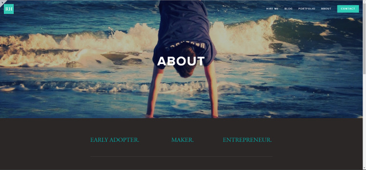
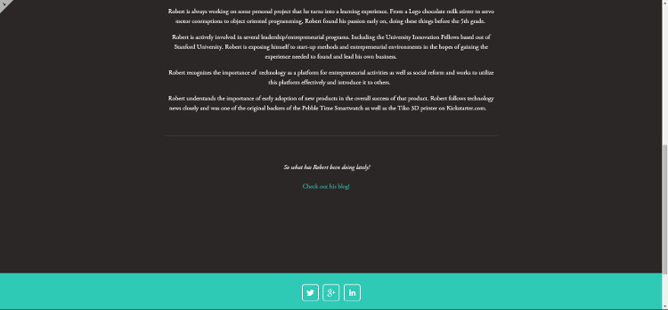

As I attended networking events and job showcases, I discovered the importance of having a personal brand. I knew that my online presence was mediocre at best (actually quite poor, but at least I didn't post cat videos on Facebook or Twitter). I had an account with all the major social networks, Facebook, Twitter, LinkedIn, Instagram, and Pintrest, namely. But I had not done an overwhelmingly good job at staying active on these networks nor posting relevant content. After some research and a recommendation by my mentor, I discovered Klout. A social media platform, in and of itself, that conglomerates and analyses traffic to your other connected social media accounts (Facebook, twitter, etc.). It assigns you a Klout score from 1 to 100 based on how influential you are online. Its algorithm assess the number of posts and interactions to that post including likes, re-tweets, comments, etc. Also, like other services it allows you to schedule Facebook and Twitter posts and suggests you a time that there will likely be the most traffic to see your post. I've been using Klout for about a week and have actually lost followers on Twitter but I fail to see it as a result of using Klout's services. My Klout score is currently 52. Average score is 40 from what I've heard. My goal is to hit 70 by the end of the year.
Anyway, as all this personal marketing business circulated in my mind an old thought recurred itself to me. "Robert, you should build a website." And this time I went through with it. I informed my roommate of my decision and he agreed to it as well as proposed that he also would build one for himself. The competition was on. Since my roommate and I share an intermediate level computer science course together we are fond and accustomed to friendly competition when it comes to anything with code. My room-mate decided to turn this into a learning opportunity and teach himself HTML and CSS through instructional YouTube videos and code his site from scratch. Me, I wanted my site up fast, reliable and beautiful. So Squarespace was the obvious choice. Of course, as a computer science major myself, I wanted something that I could get into the "nitty-gritty" with and customize later using CSS code injections and bits of HTML script. Luckily, Squarespace offers these tools and this was the deciding factor for me.
I chose a template for the site and after playing around with the built in options in the Squarespace designer studio, I made a pen and paper layout of what i wanted the final result to mimic. I found that those CSS injections would need to be used frequently to accomplish my ultimate vision of the site and thus have committed myself to learning CSS along side my roommate. Perhaps I'll code another cite for learning purposes but I think I've fallen in love with Squarespace, at least for my personal professional site. The site will be a continuous work in progress for the foreseeable future, especially until I can get some professional photos of myself this summer when I retreat to my home in North Carolina. Still, only a week into this project I can see the advantages of having a personal presence on the web. And turning this into a learning experience certainly cannot hurt either.